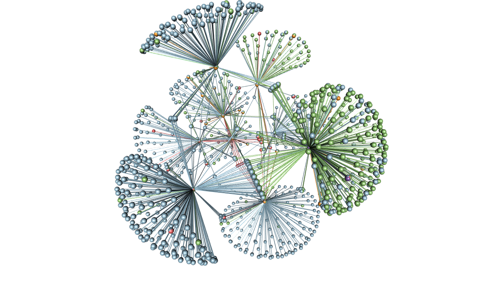
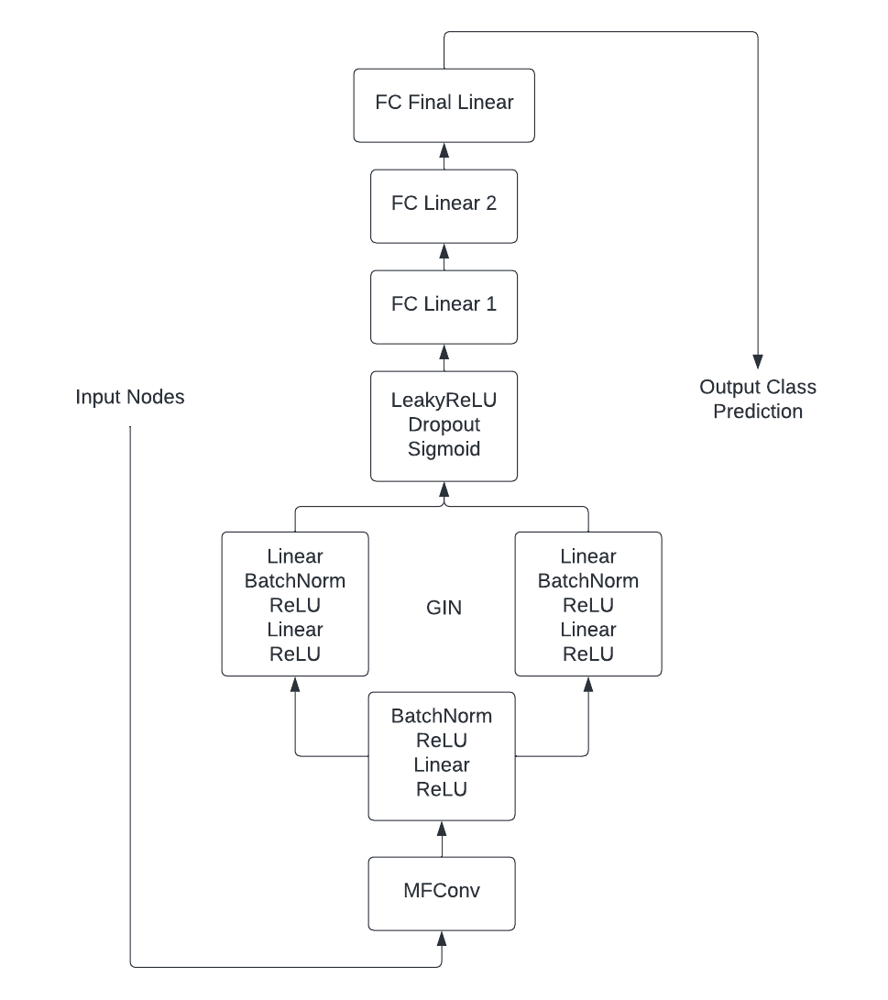
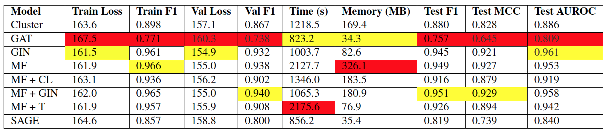
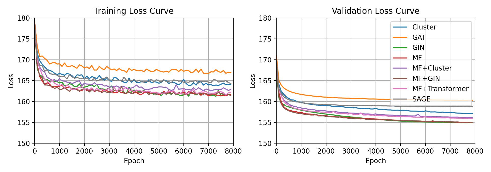

I worked on this project during the summer 2023 semester for Georgia Tech's CS7643 (Deep Learning) class. The repository is available on github and the full report is published to the root of the repository.
The purpose of this project was to explore and advance Graph Neural Network (GNN) architectures to make multi-label predictions on the nodes of Protein-Protein Interactions (PPIs). By testing existing GNN layer types in different architectures and comparing against benchmarks, our study found that a combination of Molecular Fingerprint Convolution (MFConv) and Graph Isomorphism Network (GIN) layers produced our best F-1 scores across validation and test data. This impressive result is analyzed from the theoretical perspective on both architectures in terms of discriminating power.
For this project, we used the PPI dataset, which contains undirected graphs corresponding to different human tissues. Nodes each represent a protein while edges represent interactions between proteins. The dataset includes 295 total disconnected graphs, of which 24 consist of more than 2 nodes. This dataset has been used in several studies to benchmark the performance of GNNs. Table 1 summarizes the benchmark F-1 scores of the relevant architectures used in this project.

Three-dimensional edge-colored representation of the multiplex Human HIV-1 protein-protein interaction network. [Source: Wikimedia Commons]
We trained and tested multiple GNN architectures that had existing benchmarks for the PPI dataset. Namely, Cluster Graph Convolutional Network (CGCN), GraphSAGE and Graph Attention Network (GAT) layers. Additionally, we tested Graph Isomorphism Network (GIN) and Molecular Fingerprint (MFConv) layers, which were chosen due to their superior performance on related datasets, although they do not have existing benchmarks for the PPI data.
In our very first attempt, we added multiple Graph layers at the head of every model and saw sub-optimal results. We initially encountered an ”over-smoothing” problem, which is a common issue in Graph Networks. In practice, when GNNs grow too deep, every node’s feature representation aggregates to learn the same effective feature space over time. This is in contrast to convolutional layers in image classification, where deeper nets can capture larger receptive fields and learn from relationships between different blocks of the image.
To combat this, we added several linear layers after the Graph layers, leading to immediate improvement. The Graph layers were able to extract nodes’ information from itself and its neighbors, while the fully-connected linear layers with activation functions allowed for better learning for the prediction task. Our findings, as well as architecturespecific tuning steps, issues and solutions, are discussed in more detail in the following sections.
In an attempt to improve our highest performing models, we decided to combine subsets of different convolution layers. Our hypothesis was that by using approaches designed by studies from varying domains, the network would be able to learn a richer feature space. Finally, we replaced the second and third layers of our MF architecture with GIN in hopes of helping the model to discriminate between nodes based on features learned in the first MF layer.

Final architecture with Molecular Fingerprint Convolution and GIN layers.
MF + GIN was our best performing model with an F1 score higher than both MF and GIN individually, while still halving time and space as compared to MF. The improved time and space complexity was to be expected, since our original GIN architecture was one of the fastest and most lightweight in our study. From the improved performance, we see that this combined architecture effectively allows the model to first learn a rich feature space, then use discrimination between nodes within local neighborhoods to generalize well to the training data.
From the table, we can see that MF + GIN had the lowest F1 with MF as a close second, but GIN had the lowest loss and AUROC. We suspect that this is due to the GIN architectures’ ability to better distinguish between multiple labels for classification, while MF was better for modeling the molecular graph structure. MF had a very high runtime, while MF + GIN ran in roughly half the time and GIN was a little faster. Lastly, MF + GIN was taking up almost double the amount of space on GPU as compared to GIN.
These findings were both likely due to the smaller number of parameters in this GIN layers. In conclusion, while MF had great performance for classifying molecular graphs, we see a time and space complexity vs. performance tradeoff where GIN is generally more efficient. By combining the two, we were able to build a model with the best features of both architectures, having high performance while still maintaining low runtime and memory.

Statistics for final model architectures averaged over five runs. Hyperparameters set to 8000 epochs and a learning rate of 1e-3. Lowest performance is highlighted in red, highest performance in yellow.

Training and validation loss for final model architectures at every 100 epochs. Averaged over five runs.
{kind=link}